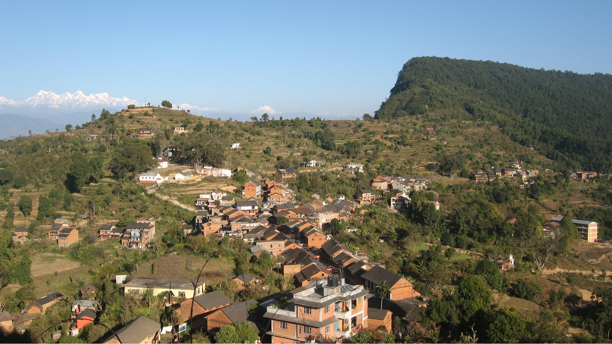
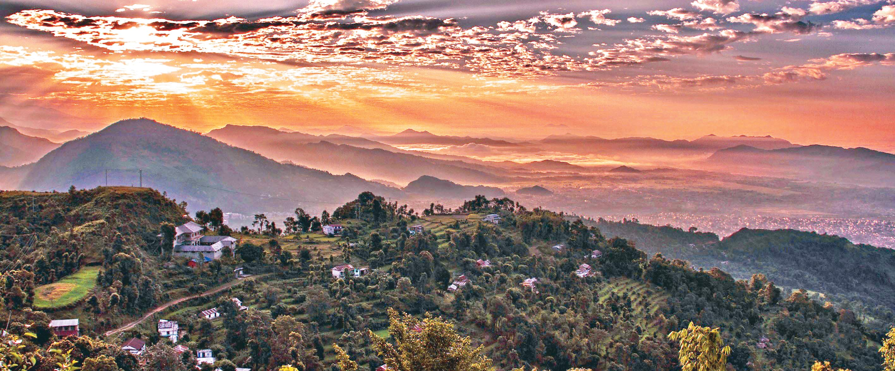
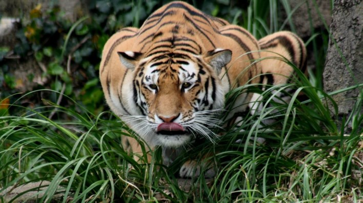
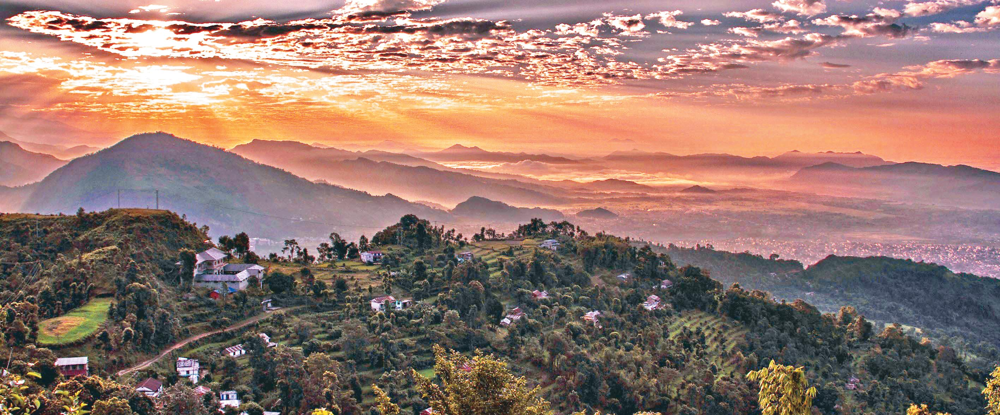
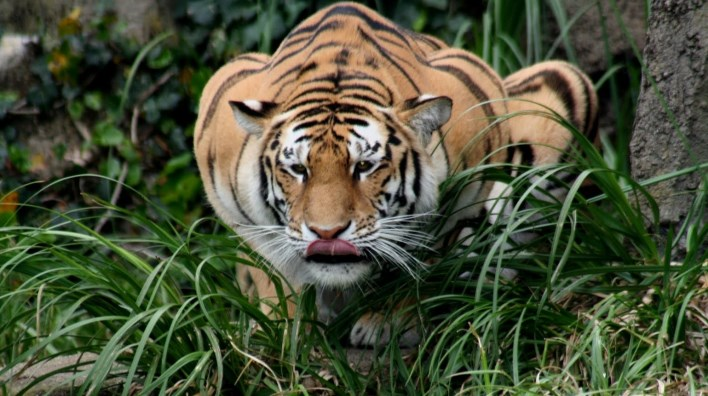

for rich hill culture, mountain views & hiking.
BANDIPUR
Climb through forests of historical trail to Bandipurfor rich hill culture, mountain views & hiking.
Midway on the day-long drive between Kathmandu and Pokhara lies the hilltop settlement of Bandipur, a Newar town with its age-old flavor still intact. Climb through pristine forests on the historical trail at Dumre Bazaar to a town that has hardly changed. Well preserved Bandipur today invites travelers to experience its unique offerings: rich hill culture, mountain views, and hiking.
Unlike most trading posts in the Nepal hills, Bandipur has retained its age-old cultural attributes - temples, shrines, sacred caves, innumerable festivals, and a Newari architecture that harks back to the Kathmandu Valley of old.
Located on a wide saddle at a height of 1,030 m the surrounding hills of Bandipur are ideal for hiking along trails that take you through tribal villages, verdant forests, and hilltop shrines that once doubled as fortresses. Following the conquest of the Kathmandu Valley in 1768 by King Prithvi Narayan Shah, many of the valley's Newar inhabitants fanned out to establish trading posts in the hills. Some traders made their way to Bandipur, from where they began to meet the needs of an increasingly mercantile British India and the Himalayan hinterland.
An obscure mountain village was transformed into a bustling commercial center, and Bandipur became a funneling point where all trails from central Nepal (and Tibet to the north) converged to head southward, crossing the great Narayani River and the Chitwan jungle to reach the Indian railhead of Narkatia Ganj. In the 1800s, this bazaar town grew in wealth and importance. Traders came from Tibet with musk pods, mountain herbs, animal skins, and horses. Calico, tobacco, glassware, and kerosene came in from British India. However, when Nepal opened her doors to the world in the 1950s, Pokhara with its airfield began to gain importance, and in 1972 the Kathmandu-Pokhara highway by-passed Bandipur.
 However, when Nepal opened her doors to the world in the 1950s, Pokhara with its airfield began to gain importance, and in 1972 the Kathmandu-Pokhara highway by-passed Bandipur altogether. But, the road's alignment was a blessing in disguise - while many Newar hill towns lost their distinctiveness after joining the highway grid, Bandipur retained its originality. Because Bandipur's merchant class had built sturdily, their buildings have stood firm and are used today once more to house shops, cafes and lodgings.
The place names around Bandipur indicate that Magars, whose chieftains ruled numerous principalities of today's central Nepal, originally inhabited the surrounding region, known as Tanahun. When Prithvi Narayan Shah of Gorkha set out to expand his dominion, Tanahun was a powerful adversary that was overcome only after a hard battle. Majority of the current residents are originally traders from Bhaktapur in the Kathmandu Valley who made their way to Bandipur and settled here. While the Newars are predominant in Bandipur, the Magar and Gurung ethnic groups inhabit the hillsides growing rice, millet, corn and mustard on terrace fields.
Unlike most trading posts in the Nepal hills, Bandipur has retained its age-old cultural attributes - temples, shrines, sacred caves, innumerable festivals, and a Newari architecture that harks back to the Kathmandu Valley of old.
Located on a wide saddle at a height of 1,030 m the surrounding hills of Bandipur are ideal for hiking along trails that take you through tribal villages, verdant forests, and hilltop shrines that once doubled as fortresses. Following the conquest of the Kathmandu Valley in 1768 by King Prithvi Narayan Shah, many of the valley's Newar inhabitants fanned out to establish trading posts in the hills. Some traders made their way to Bandipur, from where they began to meet the needs of an increasingly mercantile British India and the Himalayan hinterland.
An obscure mountain village was transformed into a bustling commercial center, and Bandipur became a funneling point where all trails from central Nepal (and Tibet to the north) converged to head southward, crossing the great Narayani River and the Chitwan jungle to reach the Indian railhead of Narkatia Ganj. In the 1800s, this bazaar town grew in wealth and importance. Traders came from Tibet with musk pods, mountain herbs, animal skins, and horses. Calico, tobacco, glassware, and kerosene came in from British India. However, when Nepal opened her doors to the world in the 1950s, Pokhara with its airfield began to gain importance, and in 1972 the Kathmandu-Pokhara highway by-passed Bandipur.
 However, when Nepal opened her doors to the world in the 1950s, Pokhara with its airfield began to gain importance, and in 1972 the Kathmandu-Pokhara highway by-passed Bandipur altogether. But, the road's alignment was a blessing in disguise - while many Newar hill towns lost their distinctiveness after joining the highway grid, Bandipur retained its originality. Because Bandipur's merchant class had built sturdily, their buildings have stood firm and are used today once more to house shops, cafes and lodgings.
The place names around Bandipur indicate that Magars, whose chieftains ruled numerous principalities of today's central Nepal, originally inhabited the surrounding region, known as Tanahun. When Prithvi Narayan Shah of Gorkha set out to expand his dominion, Tanahun was a powerful adversary that was overcome only after a hard battle. Majority of the current residents are originally traders from Bhaktapur in the Kathmandu Valley who made their way to Bandipur and settled here. While the Newars are predominant in Bandipur, the Magar and Gurung ethnic groups inhabit the hillsides growing rice, millet, corn and mustard on terrace fields.